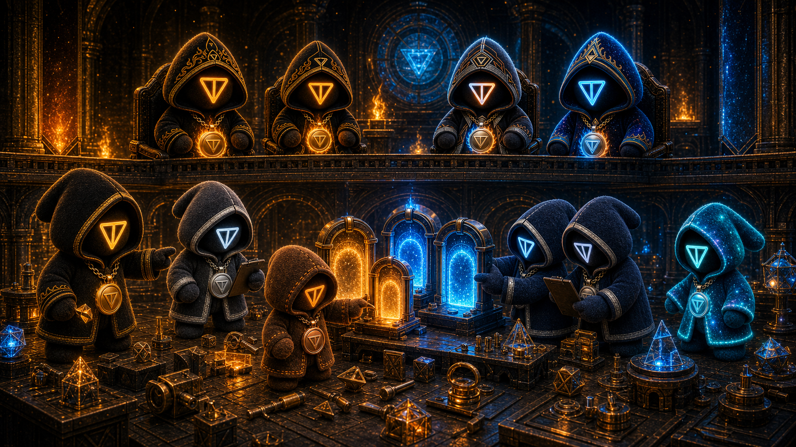
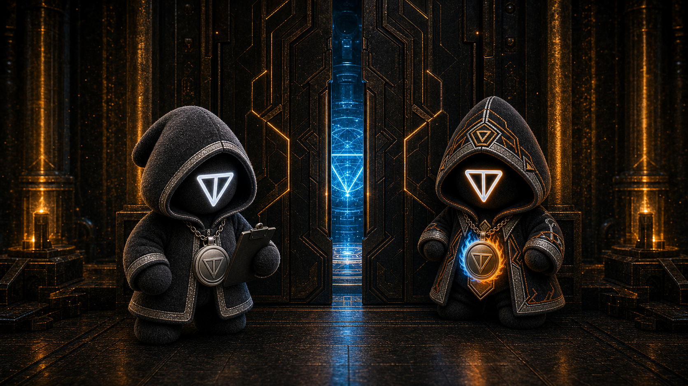
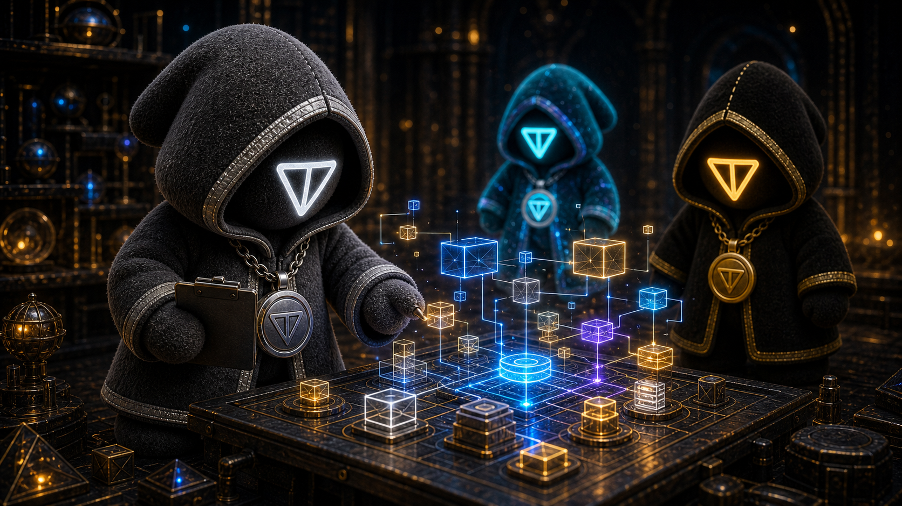
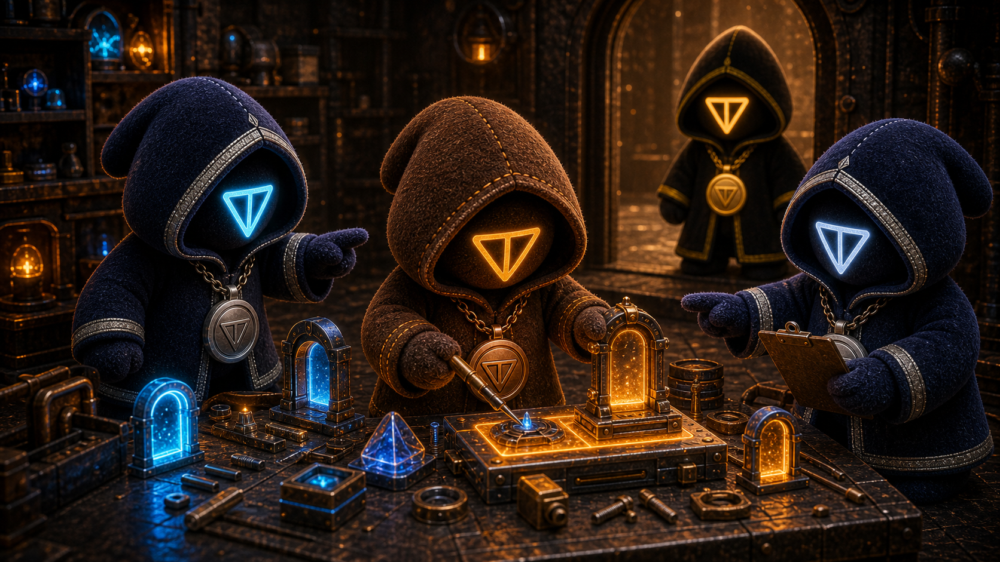
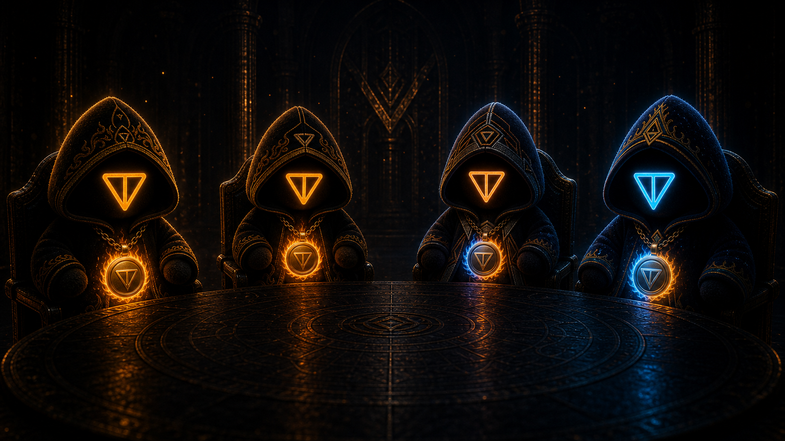

Live mini app
Live game
Plush Tap: Daily Ritual
Tap for 15 seconds, set a local score, and open a daily cosmetic gift receipt.
Built inside Telegram. Powered by TON. Carried by community.
$TCULT is the TELEGRAM CULT: a Telegram-native community turning lore, games, artifacts, and builder energy into the strongest movement on $GRAM.
The arcade is the daily participation layer. Each game is light, fast, Telegram-native, and built to make the plush world feel active every time the community opens the portal.
Tap for 15 seconds, set a local score, and open a daily cosmetic gift receipt.
Run three lanes for 25 seconds, gather TON shards, dodge plush hazards, and chase the daily cosmetic gift.
Climb the plush tower, gather blue TON shards, and reach the daily gift gate.
The GRAM stacking ritual.
One tap drops each GRAM ingot. Every 10 drops: bank it or push it. Weekly Gram Run winners post to the boards.
$TCULT Terminal and $TCULT Guard are the current utility lane. Terminal is a bot-first TON evidence scanner in verified local preview. Guard V1 is implemented locally while redeploy, branded DNS, Telegram configuration, and mobile QA remain release gates.

Paste a TON jetton address or explorer link into @TCultPlushBot. Terminal returns a fast evidence panel, adds bundle analysis, and offers a filtered explanation without taking the decision from you.

Check official routes, t.me paths, Fragment numbers, .ton domains, Getgems collections, addresses, and DEX links against readable evidence before you interact.
The $TCULT world is carried by workers, operators, signal keepers, and four mythic council seats. The story is not decoration. It is how the community understands the build: play becomes ritual, ritual becomes identity, identity becomes momentum, and momentum becomes useful TON blockchain technology.
The new portal keeps the original artifact lanes intact: Telegram sticker packs, animated packs, founder PFPs, and gift concepts remain directly reachable from the redesigned site.

Soft, early, and built for everyday chat rituals.

Motion-first expressions for Telegram replies, reactions, and community moments.

Collectible identity pieces for the earliest believers in the TON blockchain world.

A separate collectible lane for gift-style plush concepts and future identity experiments.

Plush gift art for Telegram sharing and future culture loops.
The public architecture view follows the products that exist now: four live games on Vercel, $TCULT Terminal targeting a Hostinger resident service, $TCULT Guard moving through its Vercel release gates, public TON evidence providers, and the registries that keep every claim current.
Four Telegram-native games are live. $TCULT Terminal is in verified local preview, and $TCULT Guard V1 is implemented locally. The thesis shows how those products move through read-only evidence, deployment, configuration, and mobile QA gates without overstating what is public.
Five build chambers show what is complete, what is happening now, and what comes next. A connected community track makes the ways to participate just as visible as the products being built.
Five chambers. Two connected tracks.
The build advances. The community moves with it.




Participation programs planned across every chamber.
Signal Missions are opt-in and positive. No spam, harassment, fake engagement, or financial promises.
The approved V2 allocation and official contract address are shown below.
$TCULT
Approved allocation basis. Live supply is read from the verified CA.Approved policy percentages total 100%.
| Category | Amount ($TCULT) | Share |
|---|---|---|
| Liquidity | 300M | 30% |
| Treasury | 150M | 15% |
| Community Reserve | 100M | 10% |
| Marketing & Operations | 100M | 10% |
| Founder | 50M | 5% |
| Holder Migration | 100M | 10% |
| Public Float Reserve | 200M | 20% |
| Total | 1,000M | 100% |
Proven items are marked verified. Unimplemented safeguards stay labeled planned, proof-gated.
Seven categories total 1,000,000,000 $TCULT. Unissued allocations remain subject to their execution receipts.
A 0% transfer tax appears as confirmed only after the deployed contract independently demonstrates it.
The official V2 contract is active on TON mainnet and listed below.
The STON.fi pool and initial 300M $TCULT plus 750 $GRAM deposit are receipt-backed on TON mainnet.
The six-month community and twelve-month founder public-hold terms remain proposed until each is backed by public receipts.
Current balances are not a distribution promise. Eligibility, cutoff, recipient set, and amounts appear only after the historical cutoff is frozen and the record is independently checked.
Verified on TON mainnet.
EQBbuFW3-zTqkL3ZMuVPVqGWOMHqh8e-uEfPDISDNpNouhBY
This public snapshot separates issued supply, policy allocations, contract capabilities, and liquidity custody so each claim can be checked directly.
The verified issued supply is 750,000,000 $TCULT with 9 decimals. The 1,000,000,000 allocation basis above is a policy plan, not an enforced maximum supply.
The contract is currently mintable because an admin address remains active. This capability is disclosed openly and is not a promise that additional tokens will be issued.
The $TCULT/$GRAM pool is live on STON.fi. The initial LP is retained under public-hold policy and is not represented as contract-locked.
TON Contract Verifier reproduces the deployed bytecode from the published Tolk 1.4 source. The contract, pool, and market links below are the official verification routes.